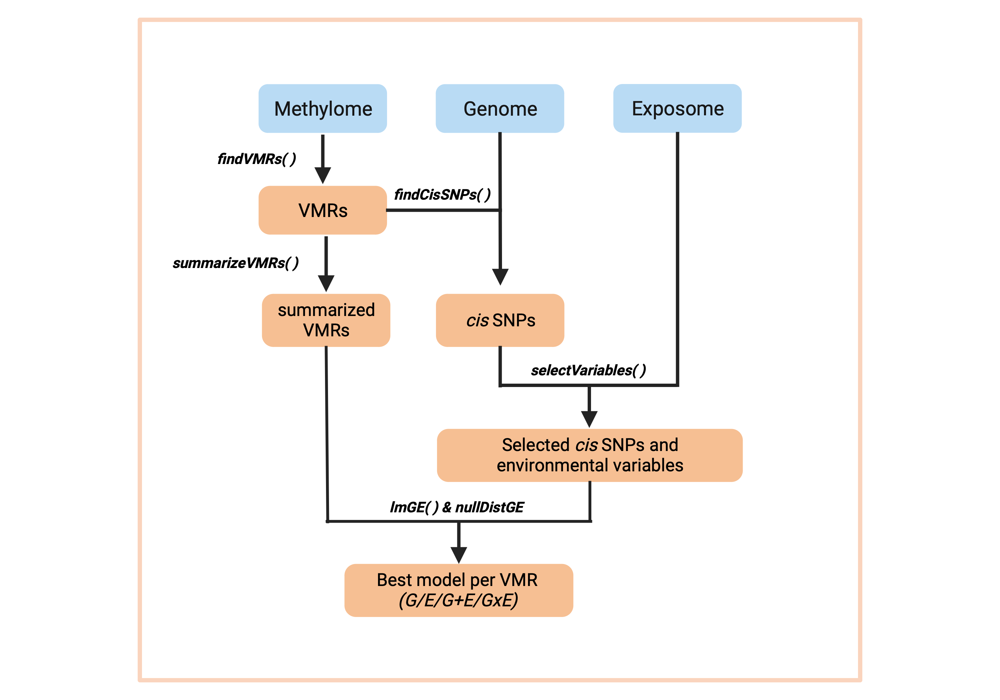
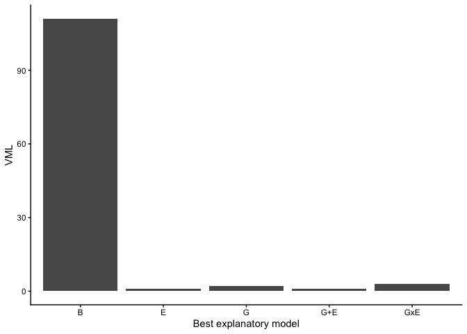

Overview
Regional Association of Methylome variability with the Exposome and geNome (RAMEN) is an R package which goal is to estimate the contribution of genetic variants and environmental exposures to loci with high DNA methylation (DNAme) variability at a genome-wide scale using population data. Characterizing the factors that contribute to DNAme variability is important because DNAme is a key epigenetic mechanism that regulates gene expression and plays an important role in development, disease, and environmental adaptation.
RAMEN provides a Findable, Accesible, Interoperable and Reusable (FAIR) workflow to conduct gene-environment contribution analyses to high-dimensional DNA methylome data (described in Navarro-Delgado et al. (2025). Using a blend of traditional statistical methods and machine learning approaches, RAMEN is designed to be computationally efficient and user-friendly, allowing researchers to gain insights into the complex interplay between genetics, environment and DNA methylation variability. The package includes a detailed tutorial, and individual functions that could be useful for other applications beyond the gene-environment contribution analysis.
RAMEN takes advantage of the fact that DNA methylation levels at nearby CpG sites are often correlated, and uses this information to identify Variable Methylated Loci (VML) from microarray DNA methylation data. Then, integrating genomic and exposomic data, it can identify which model out of the following explains best the DNA methylation variability at each VML: genetic (G), environmental (E), additive (G+E) or interactive (GxE).
Installation
You can install the latest version of RAMEN from GitHub with:
## Install dependencies
# install.packages("BiocManager")
# BiocManager::install("S4Vectors")
# BiocManager::install("IRanges")
# BiocManager::install("GenomicRanges")
## If using any of these Illumina microarrays, pick one:
# BiocManager::install("IlluminaHumanMethylation450kanno.ilmn12.hg19")
# BiocManager::install("IlluminaHumanMethylationEPICanno.ilm10b4.hg19")
# BiocManager::install("IlluminaHumanMethylationEPICv2anno.20a1.hg38")
## Install the RAMEN package from GitHub
BiocManager::install("ErickNavarroD/RAMEN")Usage
For a detailed tutorial on how to use RAMEN, please check the package’s vignette, which you can build locally by running BiocManager::install("ErickNavarroD/RAMEN", build_vignettes = TRUE) or see externally in its website. Altogether, RAMEN provides a workflow that takes a set of individuals with genome, exposome and DNA methylome information, and generates an estimation of the contribution of genetic variants and environmental exposures to its DNA methylation variability. Functions that conduct computationally intensive tasks are compatible with parallel computing.

In brief, the standard workflow consists of the following steps:
- Identify Variable Methylated Loci (VML) with
findVML().
library(RAMEN)
#> __ _ ___
#> )_) /_) )\/) )_ )\ )
#> / \ / / ( ( (__ ( \(
#>
#> ( ) ( (
#> ( ( ) ( )
#> ) ) (
#> _.(--'(''--.._
#> /, _..-----).._,\
#> | `'''-----'''` |
#> \ /
#> '. .'
#> '--.....--'
#>
#> If you use RAMEN for your analysis, please cite: Navarro-Delgado,
#> E.I., et al. RAMEN: Dissecting individual, additive and interactive
#> gene-environment contributions to DNA methylome variability in cord
#> blood. Genome Biol 26, 421 (2025).
library(dplyr)
#>
#> Attaching package: 'dplyr'
#> The following objects are masked from 'package:stats':
#>
#> filter, lag
#> The following objects are masked from 'package:base':
#>
#> intersect, setdiff, setequal, union
library(ggplot2)
library(doParallel)
#> Loading required package: foreach
#> Loading required package: iterators
#> Loading required package: parallel
# Set the parallel backend to use 2 workers
doParallel::registerDoParallel(2)
VML <- RAMEN::findVML(
methylation_data = RAMEN::test_methylation_data,
array_manifest = "IlluminaHumanMethylationEPICv1",
cor_threshold = 0,
var_method = "variance",
var_distribution = "ultrastable",
var_threshold_percentile = 0.99,
max_distance = 1000
)
#> Identifying Highly Variable Probes...
#> Setting options('download.file.method.GEOquery'='auto')
#> Setting options('GEOquery.inmemory.gpl'=FALSE)
#> Identifying sparse Variable Methylated Probes
#> Identifying Variable Methylated Regions...
#> Applying correlation filter to Variable Methylated Regions...
head(VML$VML) # Take a look at the identified VML GRanges object
#> GRanges object with 6 ranges and 5 metadata columns:
#> seqnames ranges strand | n_VMPs probes
#> <Rle> <IRanges> <Rle> | <numeric> <list>
#> [1] chr21 10990119-10990903 + | 2 cg09872009,cg05437132
#> [2] chr21 11109021-11109336 + | 2 cg00750806,cg12301579
#> [3] chr21 31799091-31799248 + | 2 cg24500711,cg07621949
#> [4] chr21 32715908-32716792 + | 2 cg16417027,cg14151498
#> [5] chr21 15955548-15955699 - | 2 cg14772146,cg07412745
#> [6] chr21 26573136-26573196 - | 2 cg11112002,cg23973918
#> median_correlation type VML_index
#> <numeric> <character> <character>
#> [1] 0.609918 VMR VML1
#> [2] 0.626168 VMR VML2
#> [3] 0.727915 VMR VML3
#> [4] 0.693244 VMR VML4
#> [5] 0.812065 VMR VML5
#> [6] 0.617368 VMR VML6
#> -------
#> seqinfo: 1 sequence from an unspecified genome; no seqlengths- Summarize the regional methylation state of each VML with
summarizeVML().
summarized_methyl_VML <- RAMEN::summarizeVML(
VML = VML$VML,
methylation_data = test_methylation_data
)
# Look at the resulting object
summarized_methyl_VML[1:5, 1:5]
#> VML1 VML2 VML3 VML4 VML5
#> ID1 4.935942 2.853168 6.389600 9.017997 2.714379
#> ID2 1.879166 2.699689 7.790474 3.134218 2.223942
#> ID3 3.311818 1.078262 4.135771 2.864724 8.648046
#> ID4 6.558106 4.683173 6.153156 3.828411 1.448140
#> ID5 2.899969 4.930614 4.919235 3.664651 2.926548- Identify the SNPs in cis of each VML with
findCisSNPs().
VML_cis_snps <- RAMEN::findCisSNPs(
VML = VML$VML,
genotype_information = RAMEN::test_genotype_information,
distance = 1e+06
)
#> Reminder: please make sure that the positions of the VML data frame and the ones in the genotype information are from the same genome build.
# Take a look at the result
head(VML_cis_snps)
#> GRanges object with 6 ranges and 7 metadata columns:
#> seqnames ranges strand | n_VMPs probes
#> <Rle> <IRanges> <Rle> | <numeric> <list>
#> [1] chr21 10990119-10990903 + | 2 cg09872009,cg05437132
#> [2] chr21 11109021-11109336 + | 2 cg00750806,cg12301579
#> [3] chr21 31799091-31799248 + | 2 cg24500711,cg07621949
#> [4] chr21 32715908-32716792 + | 2 cg16417027,cg14151498
#> [5] chr21 15955548-15955699 - | 2 cg14772146,cg07412745
#> [6] chr21 26573136-26573196 - | 2 cg11112002,cg23973918
#> median_correlation type VML_index surrounding_SNPs
#> <numeric> <character> <character> <integer>
#> [1] 0.609918 VMR VML1 1
#> [2] 0.626168 VMR VML2 1
#> [3] 0.727915 VMR VML3 659
#> [4] 0.693244 VMR VML4 855
#> [5] 0.812065 VMR VML5 726
#> [6] 0.617368 VMR VML6 788
#> SNP
#> <list>
#> [1] 21:10873592:G:A
#> [2] 21:10873592:G:A
#> [3] 21:30813322:G:A,21:30860437:G:A,21:30862803:T:C,...
#> [4] 21:31718195:C:T,21:31719083:AAG:A,21:31719372:C:T,...
#> [5] 21:14957973:A:G,21:15167527:T:C,21:15169567:C:T,...
#> [6] 21:25582143:A:G,21:25586702:G:A,21:25587960:G:T,...
#> -------
#> seqinfo: 1 sequence from an unspecified genome; no seqlengths- Conduct a LASSO-based feature selection strategy to identify potentially relevant cis SNPs and environmental variables with
selectVariables().
selected_variables <- RAMEN::selectVariables(
VML_wSNPs = VML_cis_snps,
genotype_matrix = RAMEN::test_genotype_matrix,
environmental_matrix = RAMEN::test_environmental_matrix,
covariates = RAMEN::test_covariates,
summarized_methyl_VML = summarized_methyl_VML,
seed = 1
)
#> Loading required package: stats4
#> Loading required package: BiocGenerics
#> Loading required package: generics
#>
#> Attaching package: 'generics'
#> The following object is masked from 'package:dplyr':
#>
#> explain
#> The following objects are masked from 'package:base':
#>
#> as.difftime, as.factor, as.ordered, intersect, is.element, setdiff,
#> setequal, union
#>
#> Attaching package: 'BiocGenerics'
#> The following object is masked from 'package:dplyr':
#>
#> combine
#> The following objects are masked from 'package:stats':
#>
#> IQR, mad, sd, var, xtabs
#> The following objects are masked from 'package:base':
#>
#> anyDuplicated, aperm, append, as.data.frame, basename, cbind,
#> colnames, dirname, do.call, duplicated, eval, evalq, Filter, Find,
#> get, grep, grepl, is.unsorted, lapply, Map, mapply, match, mget,
#> order, paste, pmax, pmax.int, pmin, pmin.int, Position, rank,
#> rbind, Reduce, rownames, sapply, saveRDS, table, tapply, unique,
#> unsplit, which.max, which.min
#> Loading required package: S4Vectors
#>
#> Attaching package: 'S4Vectors'
#> The following objects are masked from 'package:dplyr':
#>
#> first, rename
#> The following object is masked from 'package:utils':
#>
#> findMatches
#> The following objects are masked from 'package:base':
#>
#> expand.grid, I, unname
#> Loading required package: IRanges
#>
#> Attaching package: 'IRanges'
#> The following objects are masked from 'package:dplyr':
#>
#> collapse, desc, slice
#> Loading required package: Seqinfo
#> Loading required package: Matrix
#>
#> Attaching package: 'Matrix'
#> The following object is masked from 'package:S4Vectors':
#>
#> expand
#> Loaded glmnet 5.0
#> Loading required package: rngtools
head(selected_variables)
#> VML_index selected_genot selected_env
#> 1 VML1 21:10873.... E43, E3,....
#> 2 VML2 21:10873.... E43
#> 3 VML3 21:32782.... E15, E25....
#> 4 VML4 E43
#> 5 VML5 21:15248.... E40, E43
#> 6 VML6 21:25648.... E43- Fit linear single-variable genetic (G), environmental (E), pairwise additive (G+E) and pairwise interaction (GxE) linear models, and select the best explanatory model for each VML with
lmGE().
lmge_res <- RAMEN::lmGE(
selected_variables = selected_variables,
summarized_methyl_VML = summarized_methyl_VML,
genotype_matrix = RAMEN::test_genotype_matrix,
environmental_matrix = RAMEN::test_environmental_matrix,
covariates = RAMEN::test_covariates,
model_selection = "AIC"
)
# Check the output
head(lmge_res)
#> # A tibble: 6 × 13
#> VML_index model_group variables tot_r_squared g_r_squared e_r_squared
#> <chr> <chr> <list> <dbl> <dbl> <dbl>
#> 1 VML1 G+E <chr [2]> 0.553 0.200 0.342
#> 2 VML2 G+E <chr [2]> 0.512 0.210 0.271
#> 3 VML3 GxE <chr [2]> 0.568 0.272 0.204
#> 4 VML4 E <chr [1]> 0.301 NA 0.228
#> 5 VML5 G+E <chr [2]> 0.755 0.425 0.223
#> 6 VML6 G+E <chr [2]> 0.589 0.232 0.199
#> # ℹ 7 more variables: gxe_r_squared <dbl>, AIC <dbl>, second_winner <chr>,
#> # delta_aic <dbl>, delta_r_squared <dbl>, basal_AIC <dbl>,
#> # basal_rsquared <dbl>- Simulate a null distribution of G and E effects on DNAme variability with
nullDistGE(), and use it to filter out poor-performing best explanatory models selected by lmGE().
null_dist <- RAMEN::nullDistGE(
VML_wSNPs = VML_cis_snps,
genotype_matrix = RAMEN::test_genotype_matrix,
environmental_matrix = RAMEN::test_environmental_matrix,
summarized_methyl_VML = summarized_methyl_VML,
permutations = 1,
covariates = RAMEN::test_covariates,
seed = 1,
model_selection = "AIC"
)
#> Starting permutation 1 of 1
#> Starting variable selection of permutation 1 of 1
#> Starting lmGE in permutation 1 of 1
#> Wrapping up permutation 1 of 1
# Set threshold
cutoff_single <- quantile(
null_dist %>%
filter(model_group %in% c("G", "E")) %>%
pull(R2_difference),
0.95
)
cutoff_joint <- quantile(
null_dist %>%
filter(model_group %in% c("G+E", "GxE")) %>%
pull(R2_difference),
0.95
)
# Get a data frame with the final results
final_res <- lmge_res %>%
dplyr::mutate(
r2_difference_basal = tot_r_squared - basal_rsquared,
# Label if the best explanatory model passes its corresponding threshold
pass_cutoff_threshold = case_when(
model_group %in% c("G", "E") ~ r2_difference_basal > cutoff_single,
model_group %in% c("G+E", "GxE") ~ r2_difference_basal > cutoff_joint
),
# Label the final model group, replacing bad performing winning models with
# "B" (basal)
model_group = case_when(
pass_cutoff_threshold ~ model_group,
TRUE ~ "B"
)
) %>%
dplyr::select(-pass_cutoff_threshold) # Drop temporary column
# Keep only VML that have informative models with out data
filtered_res <- final_res %>%
dplyr::filter(!model_group == "B") # Filter based on the cutoff threshold
final_res %>%
dplyr::group_by(model_group) %>%
dplyr::summarise(count = n()) %>%
ggplot2::ggplot(aes(x = model_group, y = count)) +
ggplot2::geom_col() +
ggplot2::xlab("Best explanatory model") +
ggplot2::ylab("VML") +
ggplot2::theme_classic()
It is worth mentioning that RAMEN assumes that all data sets (genome, exposome and methylome) have undergone quality control, pre-processing and normalization steps when required. The choice of methods for these steps are out of the scope of this package, but we provide some resources and guidance in the tutorial.
Variations to the standard workflow
Besides using RAMEN for a gene-environment contribution analysis, the package provides individual functions that could help users in other tasks, such as:
- Reduction of multiple hypothesis test burden in EWAS or differential methylation analysis by using VML instead of individual probes.
- Fit additive and interaction models given a set of variables of interest and select the best explanatory model for DNAme data (e.g. epistasis or ExE studies).
- Quickly identify SNPs in cis of CpG probes.
- Get the median correlation of probes in custom regions of interest with
medCorVMR().
How to get help for RAMEN
If you have any question about RAMEN usage, please post a new issue in this github repository so that future users also benefit from the discussion.
Acknowledgments
This package was developed by Erick I. Navarro-Delgado under the supervision of Dr. Keegan Korthauer and Dr. Michael S. Kobor. We want to thank the members of the Kobor and Korthauer lab for their feeback during the development of RAMEN. Additionally, we want to thank Carlos Cortés-Quiñones and Dorothy Lin for helping create the package logo. Erick conceptualized the logo, Carlos drew it, and Dorothy refined it and finished the lettering.
Funding
This work was supported by the University of British Columbia, the BC Children’s Hospital Research Institute and the Social Exposome Cluster.
Citing RAMEN
If you use RAMEN for any of your analyses, please cite the following publication:
- Navarro-Delgado, E.I., Czamara, D., Edwards, K. et al. RAMEN: Dissecting individual, additive and interactive gene-environment contributions to DNA methylome variability in cord blood. Genome Biol 26, 421 (2025). https://doi.org/10.1186/s13059-025-03864-4
Code of conduct
Please note that this package is released with a Contributor Code of Conduct. By contributing to this project, you agree to abide by its terms.